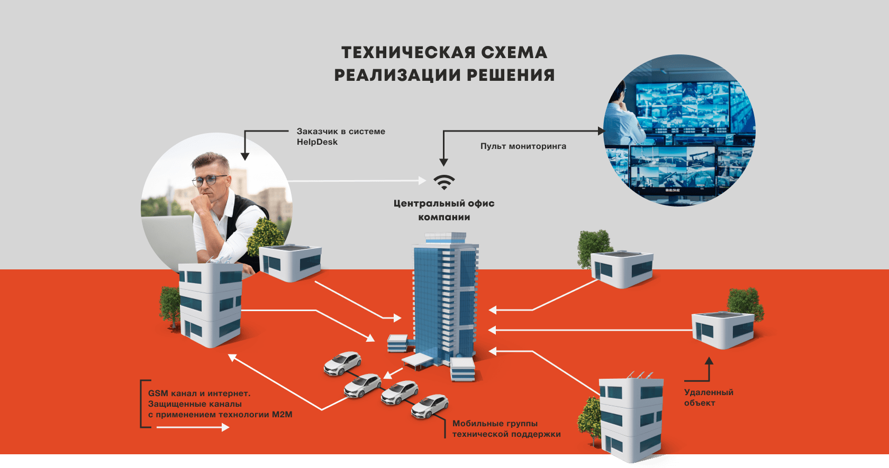

Подключение объектов к системе централизованного мониторинга позволяет оперативно реагировать на инциденты возникающие на территориально распределённых объектах, таких как:
- базовые станции сотовой связи
- ветропарки
- режимные объекты
- объекты транспортной инфраструктуры



ФУНКЦИИ МОБИЛЬНЫХ БРИГАД
- круглосуточное дежурство дежурство
- регламентное ТО в соответствии с нормативами и рекомендациями производителей
- внеплановое ТО при неисправностях или ложных срабатываниях
- ремонтно-восстановительные работы
- аварийные выезды в случае внезапной поломки оборудования или сбоев ПО
ТЕХНИЧЕСКОЕ ОБЕСПЕЧЕНИЕ
И КОМПЕТЕНЦИИ ЭБРО-СБ
-
мобильные группы, укомплектованные для оперативного устранения возникших неисправностей
-
инженеры со стажем работы в области обслуживания и монтажа комплексных систем безопасности от 15 лет
-
все сотрудники имеют необходимые допуски для выполнения работ и проведения испытаний
-
регулярное обучение персонала по нормативной базе и повышению квалификации на профильных курсах производителей оборудования систем безопасности
-
собственный пульт мониторинга позволяет удаленно следить за состоянием системы безопасности и при необходимости корректировать плановый график ТО
-
все необходимое оборудование для устранения повреждений
ЭБРО-СБ более 5 лет обслуживает распределенные объекты, обладает всеми необходимыми техническими средствами, допусками, лицензиями профильных министерств и экспертных групп
Преимущества системы централизованного мониторинга
Повышeниe эффeктивности тeхничeских срeдств охраны и возможность анализировать их работу
Сокращение количества дежурного персонала
и материальной базы
Оперативное обнаружение, локализация и ликвидация неисправностей, аварий, происшествий и других непредвиденных ситуаций
Поддержка оборудования и элементов систем безопасности в работоспособном состоянии
Прозрачная система
HelpDesk с контролем
со стороны заказчика
Соответствие правительственным требованиям
по противопожарному режиму
Экономия на оформлении лицензий и допусков
Нет нужды содержать собственный штат специалистов и поддерживать их компетенцию
Помощь во взаимодeйствии
со всeми производитeлями используeмого оборудования — одна точка входа для заказчика при любых технических вопросах